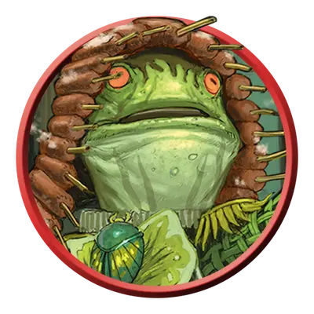

Жаболюд-воитель
Bullywug Warrior
Средняя Фея, Нейтральная

Класс Защиты 15 Инициатива +2 (12)
Хиты 11 (2к8 + 2)
Скорость 30 футов, Плавания 30 футов
| мод | спас | ||
|---|---|---|---|
| СИЛ | 12 | +1 | +1 |
| ЛОВ | 14 | +2 | +2 |
| ТЕЛ | 13 | +1 | +1 |
| мод | спас | ||
|---|---|---|---|
| ИНТ | 7 | −2 | −2 |
| МДР | 10 | +0 | +0 |
| ХАР | 7 | −2 | −2 |
Чувства пассивное Восприятие 10
Языки Общий, Язык Жаболюдов
Опасность 1/4 (50 опыта; БВ +2)
Особенности
Амфибия. Жаболюд воин может дышать как воздухом, так и под водой.
Разговор с лягушками и жабами. Жаболюд может обмениваться простыми понятиями с лягушками и жабами, когда говорит на языке Жаболюдов.
Действия
Насекомообразная рапира. Бросок рукопашной атаки: +4, досягаемость 5 фт. Попадание: 6 (1к8 + 2) Колющего урона плюс 2 (1к4) урона Ядом.
Бонусные действия
Прыжок. Жаболюд прыгает на расстояние до 30 футов, затрачивая 10 футов перемещения.
Бонус мастерства +2
Среда обитания Болота
Сокровища Личные, Инструментальные
Жаболюды
Познавшие болота и топи амфибии
Жаболюды — это Феи, воплощающие суть болот. Они охраняют мрачные, дикие места и верят, что в этом и есть цель их существования. Эти существа размером с человека напоминают жаб или лягушек и тесно связаны с другими обитателями болот.
Жаболюды-воители умело перемещаются по болотам и устраивают засады на незваных гостей.
Они нередко действуют совместно с группами дрессированных гигантских лягушек.